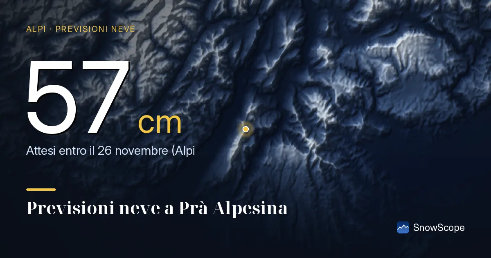

Previsioni neve a Prà Alpesina: 57 cm attesi entro il 26 novembre (Alpi)
A Prà Alpesina lo zero termico arriva tra 1.600 m e 2.050 m il 25 novembre, più in alto della quota massima (1.836 m): pioggia o neve bagnata possibili su tutti i pendii, e parte della neve può finire in deflusso. Altra acqua è in arrivo sotto forma di neve: fino al 26 novembre la nostra previsione indica 57 cm a Prà Alpesina, 54 cm a Alpe d'Huez Grand Domaine e 53 cm a La Grave. Qui ci sono due tipi di numeri: stime per i pendii superiori di ogni località e misure delle stazioni, precise ma riferite a un solo punto alla data indicata. La neve in montagna è acqua trattenuta per la primavera: quello che cade ora alimenterà più tardi fiumi e invasi.
Le previsioni neve in tempo reale per Prà Alpesina nell'app SnowScopeAltezza neve, allerte powder e mappa 3D, gratis.
Quanta neve c'è
Il manto più spesso di questo gruppo è a La Grave, circa 166 cm sui pendii superiori; poi vengono Alpe d'Huez Grand Domaine 123 cm e Dévoluy 31 cm.
Oggi 107.320 km² di terreno sulle Alpi sono coperti di neve, dice SnowScope, e 1.117 località su 1.204 hanno neve sui pendii superiori.
| Località | Altezza neve | Neve fresca, 72 h | In arrivo, prossimi giorni | Quota max |
|---|---|---|---|---|
| Prà Alpesina | 15 cm | 22 cm | 57 cm | 1.836 m |
| Alpe d'Huez Grand Domaine | 123 cm | 106 cm | 54 cm | 3.306 m |
| La Grave | 166 cm | 107 cm | 53 cm | 3.543 m |
| Villard de Lans | 17 cm | 25 cm | 52 cm | 2.055 m |
| Dévoluy | 31 cm | 43 cm | 49 cm | 2.495 m |

La neve che deve ancora arrivare
A Prà Alpesina sono previsti fino a 57 cm di neve fresca nei prossimi giorni.
Le previsioni cambiano: il momento è di solito più affidabile delle quantità, ricontrollate due giorni prima di partire.
A circa 1.640 m, Prà Alpesina ha oggi 7 cm; un 23 novembre normale ne ha 4 cm.
È più che in 32 dei 46 inverni passati in questa data.
Negli inverni passati la neve migliore a Prà Alpesina arrivava di solito a metà marzo / fine marzo.
Giorno per giorno a Prà Alpesina: martedì 24 novembre 1 cm; mercoledì 25 novembre 37 cm; giovedì 26 novembre 19 cm.
Quota per quota a Prà Alpesina: 1.445 m 4 cm al suolo, 21 cm in più nei prossimi 7 giorni; 1.640 m 7 cm al suolo, 25 cm in più nei prossimi 7 giorni; 1.836 m 8 cm al suolo, 27 cm in più nei prossimi 7 giorni.
I prossimi giorni nella previsione
Fino al 26 novembre la previsione aggiunge 52 cm a Villard de Lans e 49 cm a Dévoluy; le quantità a diversi giorni possono ancora cambiare.
Dal 21 novembre la copertura nevosa è passata da 84.940 km² a 107.320 km²; il 26 novembre la previsione indica 153.340 km².
Dove la neve resta, dove fonde
Con lo zero termico tra 2.090 m e 2.560 m il 24 novembre, i pendii bassi di Alpe d'Huez Grand Domaine possono avere neve bagnata o fusione, mentre in alto resta invernale.
A La Grave lo zero termico arriva tra 2.740 m e 3.210 m il 24 novembre: più in basso la neve può bagnarsi, più in alto resta fredda.
A Prà Alpesina la quota cambia tutto: SnowScope indica 4 cm alla base (1.445 m), 7 cm a metà montagna (1.640 m) e 8 cm in vetta (1.836 m).
In sicurezza
Le previsioni a qualche giorno possono cambiare: ricontrolla la mappa il giorno prima di partire.
Consigli per sciatori
- Le previsioni a qualche giorno possono cambiare: ricontrolla la mappa il giorno prima di partire.
- Quando lo zero termico sale sopra la località, parte della neve fonde mentre cade: aspettati neve bagnata e resta vicino alla vetta.
- Dopo una nevicata sii sul primo impianto: a mezzogiorno sole e sciatori hanno già cambiato la neve.
- Prima del fuoripista o dello scialpinismo leggi il bollettino valanghe ufficiale (link qui sotto).
- Attiva un avviso powder nell'app SnowScope per sapere quando Prà Alpesina riceve neve fresca.
Su questi numeri
Le altezze neve delle località sono la neve più alta sui pendii superiori alla data indicata; sono stime per un'area, non una misura in un punto. Le previsioni possono cambiare. Leggi sempre il bollettino valanghe ufficiale prima del fuoripista.
Bollettini valanghe ufficiali: Météo-France BERA
Cita questo articolo
Per ricerca, didattica o stampa: numeri e grafici sono liberamente riutilizzabili con licenza CC BY 4.0 citando così.
SnowScope (2026), Previsioni neve a Prà Alpesina: 57 cm attesi entro il 26 novembre (Alpi), https://snowscope.app/blog/it/2026/11/alps-pra-alpesina-snow-forecast-23-november-2026.html, consultato il 2026-11-23
SnowScope (Atlas Labs). (2026, November 23). Previsioni neve a Prà Alpesina: 57 cm attesi entro il 26 novembre (Alpi). SnowScope snow reports. https://snowscope.app/blog/it/2026/11/alps-pra-alpesina-snow-forecast-23-november-2026.html
BibTeX
@misc{snowscope2026alpspraalpesinasnowforec,
author = {{SnowScope (Atlas Labs)}},
title = {Previsioni neve a Prà Alpesina: 57 cm attesi entro il 26 novembre (Alpi)},
year = {2026},
month = nov,
howpublished = {\url{https://snowscope.app/blog/it/2026/11/alps-pra-alpesina-snow-forecast-23-november-2026.html}},
note = {Published 2026-11-23 12:29 UTC; accessed 2026-11-23}
}· CC BY 4.0 · Metodi, dati e strumenti →
Prà Alpesina: neve e temperatura per quota, quest'inverno vs lo scorso (strumenti) →
Segui Prà Alpesina
Gratis: un messaggio quando arriva la neve e il meteo ogni mattina.